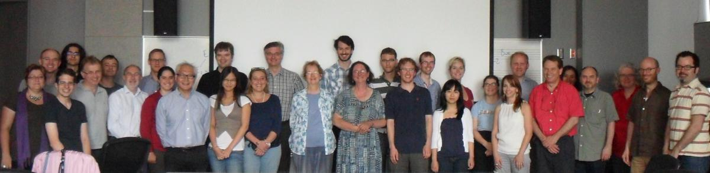

SIMSSA workshop overview, July 28th 2012
Posted by cmotuz on August 06, 2012
Yesterday morning a few dozen librarians attending the IAML conference in Montreal attended a CIRMMT workshop exhibiting SIMSSA. Ichiro opened the presentation with an overview of what SIMSSA is and reminding the specialized audience that the project needs librarians on board in order to become a true “partnership” project and receive maximum funding.
Eleanor Selfridge-Field gave a stunning keynote presentation called “Between an Analog Past and a Digital Future.” Her talk gave a whirlwind tour of the exciting state of digital music collections today, the issues surrounding them and the many possible paths for the future. She showed us images of recovered music and watermarks from faded documents, discussed projects using optical recognition systems for differentiating the handwriting of scribes, and of course talked through the very practical implications for musicologists of not having to travel halfway across the world to see sources. “I’m wondering,” she exclaimed at one point, “how musicology ever existed before five years ago!” As a scholar famous in the Early Music world for her indespensable articles based on vast archival research in Italy and Austria, the irony of her comment was not lost!
Most of the morning continued on with talks from the DDMAL lab, beginning with two by Andrew Hankinson. The first described why MEI (which stands for “Music Encoding Initiative”) is a file format that will soon come to replace other music notation encoding systems (we hope!). This topic indeed deserves a blog post of its own, so stay tuned for that! He then gave a general overview of the Rodan project, paving the way for some of the more specific talks to follow.
Wendy followed with an update on diva.js. New features include the ability to download individual images in .jpg format, as well as some image manipulation such as brightness, contrast, colour replacement and opacity. It’s possible to toggle the download feature, so that people who want to show but not share their collections still have that option.
Diva wowed the audience with its speed and high resolution, but prompted Jürgen Diet of the Bayerische Staatsbibliothek in Munich to ask the important question of how a university project like this one will outlast the degrees of the programmers involved. Ichiro answered essentially that as long as the DDMAL lab is running, all our projects, as long as they still have users, will still have people to take care of them. Or so I interpreted; his exact words were: “Keep me healthy.”
Brian spoke afterwards about human-computer interaction, explaining why humans are still required and how it is possible to make sophisticated programs like Rodan run in a web browser, without downloadig any images or programs. for instance, while computers can carry out image processing such as brightness/contrast alterations and despeckling, they are not very good at determining what thresholds produce usable images, so a human is needed to set them. In the field of OMR, the process is far from automatic, and indeed will probably always require humans to fix computer errors. It will soon be possible for users to provide this interaction through web browsers by relaying the “heavy-lifting” to a server or network of servers, giving to the user’s computer only small tasks such as preparing previews.
After looking at elements of Rodan in detail, Anton’s presentation on workflow zoomed back out to show the big picture. “Workflow” means the ordering of steps required for a complex task, but it doesn’t mean only that. Anton explianed that some jobs are user-chosen, allowing a user to run only certain non-interdependant tasks, or to run tasks only up to a certain point. He also explained the “queue system,” whereby a virtual “traffic cop” sends jobs to the server at a rate which the server can process. Finally, the workflow system has the feature that it is possible to restart particular jobs - a bad binarisation threshold, for instance, can be corrected without starting over from the beginning.
Zooming back into detail, Gabriel talked about the pitfalls of staff line detection. Some methods, such as taking out the colour red in an image, can be effective ways of removing staves, but the system still needs to be able to find them if it is to calculate the pitches of the notes left over. Gabriel showed us the staff finding system, and in particular how the application of a rank filter to thicken the lines of a staff increased the success rate of the computer up to 100 percent - very impressive indeed!
The problem of showing off Neon is that it looks like Finale or Sibelius but with Ligatures. Or other pluggable libraries. So? Andrew’s talk on MEI earlier helped Greg drive home that the encoding language that Neon renders is much more sophisticated than other notation programs. Indeed, MEI’s ability to track the graphical location of pitches and overlay the rendering on the original is very impressive indeed. AND it runs in YOUR web browser.
Alastair finished off the Rodan segment with the pros and cons of indexed vs. unindexed searching. His conclusion was that common searches should be indexed for speedy searching, but it would be possible to come up with a new query and to search the database at reasonable speeds using virtual machines running at the same time.
Laurent Pugin from RISM Switzerland then gave an overview of how to use RISM’s vast collection of metadata data in conjunction with the SIMSSA project. He spoke about creating a search interface for incipits, as well as XSL, which transforms metadata into MEI headers, essentially keeping information about a piece in the same file as the encoded piece itself.
Laurent also spoke about the need to begin OMR even though the system isn’t perfect yet, as running systems such as Aruspix and Gamera will at least help build character (or “glyph”) libraries which will aid future searches. As the inventor of Aruspix, Laurent showed how it would be possible to begin image processing with Rodan and finish the OMR with Aruspix - a marriage of two systems.
Finally, Julie and Christopher gave us an overview of the ELVIS project, which has been mentioned on this blog and which will become the focus of many posts to come!

The presentations from the workshop:
- Andrew Hankinson— The Music Encoding Initiative 2012
- Andrew Hankinson—Optical Music Recognition “in the Cloud”
- Wendy Liu— Diva.js: A web-based document viewer for high-resolution images
- Brian Stern—User Interaction in Optical Music Recognition
- Anton Khelou—A Workflow System for Document Image Analysis
- Gabriel Vigliensoni— Shape classification and pitch detection in manuscript sources
- Greg Burlet—NEON.js: Neume Editor Online
- Alastair Porter—Distributed Search for Large Collections of Symbolic Music
- Julie Cumming—ELVIS: Electronic Locator of Vertical Interval Successions